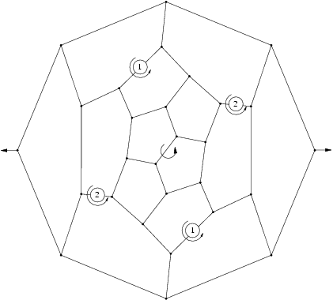
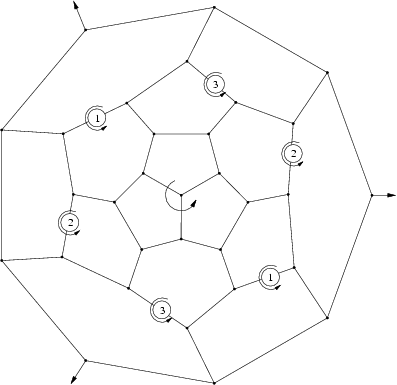
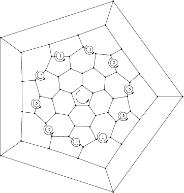
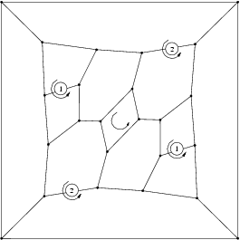
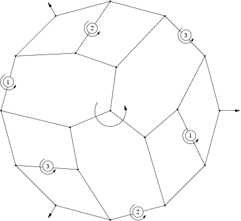
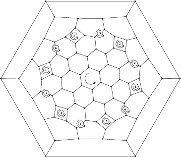

The series  The group is the group generated by a rotation of angle 2pi/m around a fixed axis D and m rotation of order 2 around m axis Dm orthogonal to D.
The group is the group generated by a rotation of angle 2pi/m around a fixed axis D and m rotation of order 2 around m axis Dm orthogonal to D.
Features
- Algebraic structure: it is dihedral group of order 2m
- Kind of elements
- 1 element: identity,
- m-1 elements: rotation of angle k2pi/m with 1<=k<=m-1 around D,
- m elements: m rotation of order 2 around axis Dk, 1<=k<=m with angle between Dk and Dk+1 equal to pi/m
- Particular cases
- if m=1, then the group is C2
- if m=2, all axis are equivalent
- Examples
- First Fulleren of symmetry D2:

- First Fulleren of symmetry D3:

- First Fulleren of symmetry D5:

- First 4n of symmetry D2:

- First 4n of symmetry D3:

- First 4n of symmetry D6:
